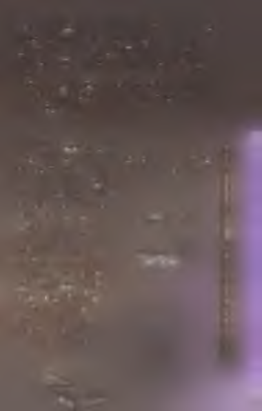

Auri üçleri toplayıp Kabuk’a doğru yola çıktı. Artık çok
daha hafif gibiydiler ve bunda şaşılacak bir şey yoktu.
Ne de olsa sırlarını dökm üşlerdi ve Auri tutulan sırların
ne kadar ağırlaşabileceğim çok iyi biliyordu.
Kabuk’a vardığında üçleri dikkatle sıraya koydu. Fakat onları duvar boyunca dizme işini bile bitirm eden ona vereceği ilk hediyenin şeklini gördü. Bundan daha
açık olamazdı. Burada bu kadar çok boş yer olm ası bo
şuna değildi. Duvardaki ikin ci rafı hiç kullanm am ış olması boşuna değildi.
Dişler harikuladeydi. Hepsi de öyle doğruydu ki. Bir
peri m asalındaki dilekler gibi ışıldıyorlardı.
Neyin nasıl olm ası gerektiğini gören Auri ilk parlak
üçü hem en Kağnı’ya götürdü. Ç ırılçıplak adamlarla dolu
Yüklük’ten, daire m ükem m elliğindeki H alkacık’tan,
sonra da yeni adlandırılm ışlığm a ilgisiz kalan Bilge
D okuz’dan geçti.
157
Sırıtan genç kız, parlak pirinç üçü dosdoğru gardırop
çekm ecesine götürdü ve onu büyük bir dikkatle oraya yerleştirdi. Üç, yerine zahm etsizce girdi. Oraya bir sevgili veya bir anahtar kadar iyi uydu. Auri iki eliyle birden uzanarak çarşatm serin beyaz yum uşaklığını parm ak uçlarında hissetti. Çarşafı kaldırıp dudaklarına
bastırdı.
O artık gitm ekte serbestti. Ve onu bağrına basan Auri
Kabuk’a kadar nefes nefese koştu.
İkin ci üçü dosdoğru Taklar’a taşıdı. Ve soluksuz bir
an boyunca Şeyaltı’nı geride bıraktı. Yıkık bir duvardan,
gizli bir m erdivenden, sonra da bir m ahzenden geçip
bildiği en güzel hanın kilerine girdi. Üçü oraya bıraktı.
Karşılığında da m asum iyetle ve aşağısıyla doldurulm uş
tom bul beyaz bir deniz ördeği aldı. Güzel ve yum uşak
kuş şefkatli fısıltılar ve hatırlanan yollar taşımaktaydı.
Auri tünellerde hızla koşarken onun ağırlığı altında
bile bir tüy kadar hafifti.
Kabuk’a döndüğünde dikkatle kendi yatağının k arşısındaki duvara dayanacak şekilde bir döşek serdi; eğer o Auri’ye ihtiyaç duyarsa sadece fısıldam anın bile yeterli olacağı kadar yakm a. Eğer o isterse geceleyin Auri’ye şarkı söyleyecek kadar yakma.
Genç kız böyle düşününce biraz kızarıp bozardı, so n ra m ükem m el çarşafı alıp yatağına serdi. Onu elleriyle nazikçe düzeltti. Çarşafın güzelliği, tenine konan b ir
öpücük gibiydi.
Auri sırıtarak U ğrak’a geçti ve battaniyeyi geri getirdi. Battaniyenin onu terk etm esi de boşuna değildi. B elli ki işin aslını Auri’den çok daha önce anlam ıştı. A rtık
158
genç kıza göre değildi, hepsi bu. Auri battaniyeyi yatağa sererken onun artık zem inden korkm adığını fark etti. G eri çekilip güvenli, yum uşak ve tatlı battaniyesine
baktı.
U ğrak’tan onun güzel çay fincanını getirdi. Sayfaları
ayrılm am ış, okunm am ış ve tamamıyla bilinm eyen deri
ciltli kitabı getirdi. Küçük taş heykelciği getirdi. Bunların üçünü de onun yatağının yanındaki rafa koydu ki o da k endince bir güzelliğe kavuşsun.
Ve böylece on a hediyesi tamam oldu: kalabileceği güvenli bir yer.
Auri her ne kadar durup o anın keyfini çıkarm ak
istese de çalışmaya devam etmeliydi. Bugünün kuralı
üçtü. Ona iki hediye daha lazımdı.
*-*••*•
Genç kız Uğrak’a geri döndü ve rafları alıcı gözle süzdü.
Bu, hem bir yapma günü olduğu, hem de işler yolunda
gittiği için onun daha başka neye ihtiyaç duyabileceğine
kafa yordu.
Bu farklı bir düşünme biçimiydi. Kendisi için bir isteği
yoksa da Auri bu tür bir şeyin tehlikeli olduğunun bilincindeydi.
Genç kız çobanpüskülü şişesini süzdü. Tüm cazibesine rağmen şişenin ona uygun olmadığını biliyordu. Pek değildi. Bu beklenmedik bir ziyaret hediyesiydi. Bal pete
ğ i... yani yaklaşık olarak. Auri uzanıp iki parmağıyla defne
meyvesi kavanozuna dokundu. Kavanozu havaya kaldırdı
ve ışığa tuttu. Onun defnedeki gibi bir huzurdan yoksun olduğu doğruydu.
işte o zaman taşlar yerine oturdu. Tabii ya. Auri biraz
gülümsedi. Hiddeti uzak tutmak için daha iyi ne olabilirdi?
Hem zaten bu genç kızın çoktan başladığı bir şeyin üçüncü
parçasıydı. Bir mum. Bir mum tam ona göreydi.
Auri elinde kavanozla ansızın durdu. Nefesini tutup zamanın amansız gerçeklerini düşündü. Bir mum, eritmeyi gerektirirdi. Ve karıştırmayı. En önemlisi de bir kalıbı. Bu
hiç iyi bir fikir değildi. Onun ufak tefek şeylerle işi olmazdı.
Hayır. Bir kalıp. Ona layık bir mum yapmanın tek yolu
buydu.
Ve bu da Hudut anlamına geliyordu.
160

Auri neredeyse hiç tereddüt etmedi. Kendisi için böyle
bir şeye cesaret edemezdi ama işlerin böyle yürümesi gerekliydi. O birkaç güzel şeye layık değil miydi? Tüm yaptıklarından sonra şöyle şık ve şahane bir hediyeyi hak etmiyor muydu?
Tabii ki ediyordu. O yüzden Auri kendinden emin adımlarla Kabuk’a gitti. O yüzden demir şeritli kapıyı ardına kadar açtı. O yüzden Hudut’a girdi.
Burası temiz ve sessiz bir yerdi.
m
içeride bir iş tezgâhı vardı. Koyu renkli, düzgün ve taş
kadar sertti. Yanlarında takozlar vardı. Bir mengene. Bir dizi
askılı halka. Bir hamlaç ayaklı
ğı. Hepsi de çelikten, pirinçten ve demirden olan güzelce düzenlenmiş musluklar
ve vanalar vardı.
Burada hepsi tek bir
duvara takılı raflar da bulunuyordu. Bunlar çok
çeşitli malzemelerle doluydu. Tıpalı şişelerinde
asitler ve ayıraçlar. Taş
bir kavanoz içinde sül-
fonyum.
Pudra,
tuz,
toprak ve bitki askılıkları. Yağlar ve merhemler.
On dört çeşit su. Çiftekireç. Kafur. Hepsi de mükemmeldi.
Hepsi de doğruydu. Hepsi de toplanmış, etkinleştirilm iş
ve en uygun yöntemlerle saklanmıştı.
Aletler de vardı. Süzgeçler ve imbikler. Fitilsiz geniş bir
ocak. Bakır tüp kangalları. Potalar, maşalar ve kaynatma
leğenleri. Kalburlar, filtreler ve bakır bıçaklar. Kaliteli bir
öğütücü ve ışıl ışıl, tertemiz bir burgulu pres.
Taş raflar da vardı. Dikkatli raflar. Buralardaki kaim mı
kalın camların arkasına şişeler diziliydi. Bu şişeler diğer
raflardaki gibi tertipli değildi. Etiketlenmemişlerdi. Ne
yaptıkları belirsizdi. Birine çığlık hapsedilmişti. Bir diğerine hiddet. Bu ikisi oradaki pek çok şişe arasında en korkunçları sayılmazdı.
Auri defne meyvesi kavanozunu iş tezgâhının üstüne
koydu. Kendisi ufak tefek bir şeydi. Bir öksüz gibi. Çoğu
şey ona büyük gelirdi. Çoğu masa ona göre çok yüksekti.
Ama bu değildi.
Bu oda eskiden Auri’ye aitti. Fakat hayır. Bu oda bir
zamanlar birine aitti. Şimdi ise değildi. Bu bir hiç yerdi.
Kimseye ait olamayacak boş bir sayfaydı. Auri’ye göre de
ğildi.
Genç kız iş tezgâhındaki bir çekmeceyi açtı ve pirinçten yapılma çembergen bir kalıp çıkardı. Mum yapmaya uygun bir tane.
Auri ciddi bir yüz ifadesiyle defne meyvesini süzdü.
Meyve bir insanın bekleyebileceği kadar saygılı ve gururluydu. Ve biraz kuzey rüzgârının soğuğunu taşıyordu. İşte buna gem vurmak lazımdı. Ve... evet. İçinden azıcık öfke
de geçiyordu. Auri iç çekti. Bu hiç işini görmezdi.
162
Genç kız ona gözlerini kısarak baktı ve sayıları aklından geçirdi. Bakışları kalıp ile meyve kavanozu arasında gidip gelirken ondan çıkacak balmumunun yeterli olmayacağını fark etti. Bütün bir muma, doğru düzgün bir muma, ona uygun bir muma yetmezdi.
Auri oradan ayrıldı ve bal peteğiyle beraber geri geldi.
Azimli bir edayla çalışarak peteği prese koydu ve ballar
alttaki şeffaf, temiz kavanozun içine akana kadar kulpu
çevirdi. Bu iş yarım dakikasını aldı.
Auri balı damlamaya bırakıp yakındaki fitilsiz ocağı
tutuşturdu ve bir potayı uygun yükseklikte tutsun diye
halka ayaklığını döndürdü. Presi açtı, yassı balmumu tabakasını kaldırdı ve onu dörde katladıktan sonra potanın içine bıraktı. Pek balmumu olduğu söylenemezdi; belki
iki avucunu birden dolduracak kadar vardı. Fakat defne
meyvesinin yağını çıkardıktan sonra kalıbı doldurmaya
yeterdi.
Genç kız eriyen balmumunu gözden geçirip kafa sal
ladı. Bu balmumu da pek uykucuydu. Güz lathlığıyla,
gayretle ve haklı mükâfatla doluydu. Çanların da islen
mediği söylenemezdi. İçinde Auri’nin ona yakışmam.ıdı
ğı hiçbir şey yoktu.
Bu sıradan bir şair mumu olsaydı bal ve defne yeterdi. Fakat o alelade bir şair değildi. Auri’ye daha fazlası lazımdı.
Bir tutam kafur ideal olurdu. Sadece bir tutam, bir k ıvılcım , azıcık uçucu bir şey. Fakat Auri’nin hiç kafuru yoktu ve boş dileklerde bulunm ak bir anlam taşımıyordu. Bu yüzden genç kız onun yerine Uğrak’tan bir ta
şım lık mükemmel katran getirdi. Hem bağlamak, hem de
yaklaşan kış mevsiminde onun sağlığını sağlıklı tutmak
için.
Auri balmumunu ince bir cam çubukla karıştırırken
gülümsedi. Doğru düzgün aletlerle çalışmak az bulunur
bir zevk, bütünüyle bir lükstü. Reçinenin erim esini bek leyen genç kız ıslık çalarak potayı karıştırdı ve sırıttı. Bu onun sırrı olacaktı. Muma ıslığını da katacaktı.
Auri daha sonra Kabuk’a gitti ve gri cam kavanozdaki mükemmel lavantasını süzdü. İçinden bir filiz aldı.
Sonra iki. O anda içi utançla doldu. Bu pintilik edilecek
bir zaman değildi. O yardımlarında asla pintilik etmezdi.
Hoş rüyalar hak etmiyor muydu?
Auri kavanozu bıraktı ve içindeki lavantanın tam yarısını çekip aldı. Bazen nasıl da açgözlü oluyordu.
Genç kız Hudut’a geri döndü. Defne meyvesini öğütücüye döktü. Üç kez nefes alıp verene kadar meyveler bir güzel doğrandı. Auri durup yarısı ezilmiş meyve yığınına
baktı.
Defnenin uygun yolunu biliyordu. İşleri halletm enin
sabırlı yolunu da. Posalı meyveyi öğüt ve kaynat. Artığı
164
süzgeçten geçir. Tekrar kaynat, arıt ve posayı ayrıştırmak
için soğut. Uygun aletlerle bile bu saatlerce sürecek bir
işti. Saatlerce ve saatlerce.
Fakat o çok yakında geliyordu. Auri bunun farkındaydı. Vaktinin olmadığının da.
Zaten bütün bir günü olsaydı bile posanın içinde ona
uymayan özler mevcuttu. O öfkeyle ve üm itsizlikle tıka
basa doluydu. Ve guru r... eh, ona da ziyadesiyle sahipti.
Böyle şeyleri ayırmanın bazı yolları vardı. Auri hepsini bilirdi. Oksitlem enin dönüş dairesini bilirdi. Süb-lim leştirebilir ve süzdürebilirdi. Bu sanatı icra edenlerin
gıptayla bakacağı bir şekilde dışlayıcı olmayan bir özü
izole edebilirdi.
Fakat şimdi aydan yardım dilenilecek vakit değildi.
Auri ne işini aceleye getirebilir, ne de geciktirebilirdi.
Bazı şeyler çok önemliydi, işte o kadar.
Durum tıpkı Mandrag’m dediği gibiydi: Simyanın
onda dokuzu kimyaydı. Ve kimyanın onda dokuzu beklemekti.
Peki ya diğer parça? Onluğun o incecik biri? Simyanın esası, Auri’nin uzun zaman önce öğrendiği bir şeydi.
Genç kız onu dünyanın gerçek şeklini anlamadan önce
çalışm ıştı. Küçük olm anın anahtarını bilmeden önce.
Bu doğruydu. Sanatını öğrenmişti. Onun gizli yollarını ve sırlarını biliyordu. İnsanı bu sanat dahilinde hünerli kılan tüm incelikli, tatlı ve ikna edici yöntemleri... O
yöntemler öyle çoktu ki. Bazıları yazıp çizerdi. Semboller
vardı. İşaretler. Bağlar ve bağlamlar. Formüller. Matematiksel işleyişler...
Ama artık ondan çok daha fazlasını biliyordu. Daha önceden doğru olduğunu sandığı şeylerin çoğu birer hileden ibaretti. Dünyayla konuşmanın akıllıca yollarından daha
fazlası değillerdi. Onlar altı üstü birer pazarlıktı. Bir yakarış.
Bir çağrı. Bir feryat.
Fakat altta, şeylerin gizli kalbinin derinliklerinde bir sır
yatıyordu. Mandrag genç kıza bunu hiç anlatmamıştı. Auri
adamın da bildiğini sanmıyordu. O bu sırrı kendi kendine
keşfetmişti.
Auri dünyanın gerçek şeklini biliyordu. Diğer her şey
gölge ve uzak davulların sesiydi.
Genç kız kendi kendine başım salladı. Ufacık yüzünde ciddi bir ifade vardı. Balmumu kıvamındaki öğütülmüş
meyveyi bir kalbura aktardı ve kalburu bir toplama kavanozunun üstüne koydu.
Auri gözlerini yumdu. Omuzlarını geriye attı. Yavaş ve
güçlü bir nefes aldı.
Havada bir gerginlik vardı. Bir ağırlık. Bir bekleyiş.
Rüzgâr hiç yoktu. Auri konuşmadı. Dünya gerilip esnedi.
Auri bir nefes daha aldı ve gözlerini açtı.
Auri bir yetim kadar ufaktı. Taşların üstündeki minik
ayakları çıplaktı.
Auri doğruldu ve altın sarısı saç halkasının içinde sırıtarak arzusunun tüm ağırlığım dünyanın sırtına vurdu.
Ve her şey sarsıldı. Ve her şey onun niyetini anladı. Ve
her şey onu hoşnut etmek için harekete geçti.
166
Fazla geçmeden Auri lavantayla preslenmiş bir kızıl-kahve-
rengi mumla Kabuk’a geri döndü. Mumu sahil ve arı kokuyordu. Mükemmel bir şeydi.
Genç kız yüzünü yıkadı. Ardından elini ve ayağını da
yıkadı.
Az kalmıştı. Auri biliyordu. O kısa süre sonra ziyarete
gelecekti. Tüm pembemsiliği, tatlılığı, kederi ve kırılmışlı
ğıyla. Bu açılardan tıpkı Auri gibiydi. Ziyarete gelecekti ve
beyefendiliğine yakışır şekilde yarımda üç şey getirecekti.
Sırıtan Auri yerinde duramıyordu. Kendisi de ona üç şey
verecekti.
İlki Taborlin’e layık şiirlerle ve hayallerle dolu sıcacık,
akıllı bir mumdu.
İkincisi doğru düzgün bir yerdi. Yüreğini koyabileceği
bir raf. Uyuyacağı bir yatak. Oradayken hiçbir şey ona zarar
veremeyecekti.
Peki ya üçüncü şey? E h ... Auri boynunu büktü ve yanaklarının yavaşça kızardığını hissetti...
Genç kız sırf oyalanmış olmak için yatak rafında duran
küçük taş askere uzandı. Askerin kalkanındaki simgeyi o
zamana kadar fark etmemesi garipti. Çok silikti. Fakat evet.
Simgede alevden bir dille sarılı kule vardı. Bu sıradan bir
asker değil, küçük bir taş Amyr’di.
Auri daha yakından baktığında heykelciğin kollarında
da belli belirsiz çizgiler gördü. Bunları daha önce nasıl gözden kaçırdığını bilemiyordu. Bu ufacık bir Ciridae’ydi. Elbette. Elbette öyleydi. Yoksa ona uygun bir hediye olmazdı ki. Genç kız minik heykeli öptü ve tekrar rafa koydu.
Yine de hâlâ üçüncü bir şey vermesi gerekiyordu. Bu sefer genç kızın yüzü kızarmadı. Auri gülümsedi. Yüzünü, eli-167
ni ve ayağını yıkadı. Sonra seke seke çabucak Uğrak’a gitti
ve çobanpüskülü şişesini açtı, iki parmağıyla şişeden tek
bir dut çıkardı. Foxen’ın yeşil ışığına rağmen ufacık meyve
tanesi kan kadar parlaktı.
Genç kız kendini Gam’a atıp aynaya baktı. Dudaklarını
yaladı ve dutu onlara bastırarak soldan sağa gezdirdi. Sonra
da onları duta bastırarak ileri geri kaydırdı.
Auri aynadaki yansımasını süzdü. Eskisinden farklı gözükmüyordu. Dudakları en solgunundan pembeydi. Gülümsedi.
Genç kız Kabuk’a geri döndü. Yüzünü, elini ve ayağını
yıkadı.
İçi heyecanla fokurdayan Auri onun yatağına baktı. Onun
battaniyesine. Onun yatak rafına ve orada onu korumak için
bekleyen minik Amyr’e.
Mükemmeldi. Doğruydu. Bir başlangıçtı. O bir gün kalabileceği bir yere ihtiyaç duyacaktı ve o yer hazırdı. O bir gün çıkagelecekti ve Auri onunla ilgilenecekti. Karanlıkta
oyuk bir yumurta kabuğu olma sırası bir gün ona gelecekti.
Ve o zam an... Auri gülümsedi. Kendisi için değil. Hayır.
Kendisi için asla gülümsemezdi. Kendisi kuytu bir köşeye
sığınarak küçük kalmalı, dünyadan saklanmalıydı.
Fakat onun için durum bambaşkaydı. Auri onun için tüm
arzularını günışığına çıkarırdı. Tüm kurnazlığını ve maharetini konuştururdu. Sonra da ona bir ad koyardı.
Genç kız kendi ekseninde üç kez döndü. Havayı kokladı. Sırıttı. Etrafındaki her şey doğru düzgündü. Nerede olduğunu tamı tamına biliyordu. Tam da olması gereken
yerdeydi.
168
O ö O